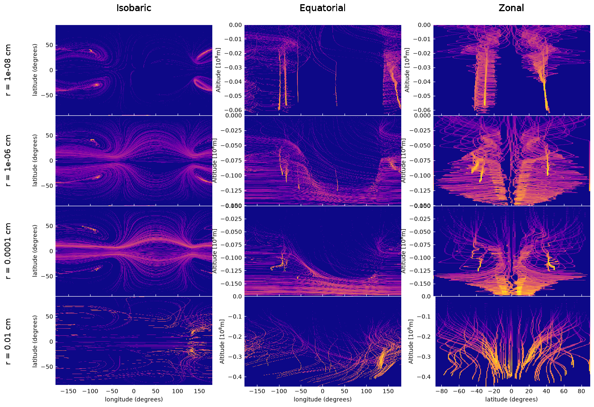

TLDR
I model cloud particle trajectories across 4 hot Jupiter atmospheres spanning a range of temperatures and surface gravities. Using atmospheric profiles from a global circulation model (GCM), I balance gravitational and drag forces to compute settling velocities and simulate particle trajectories. I find that small particles follow the equatorial jet stream, become trapped in nightside gyres, and move predominantly horizontally except at the highest pressures. This suggests jets carry particles faster than they settle, challenging previous interpretations of hot Jupiter cloud observations. My simulations offer a way to predict how clouds evolve, constraining the mechanisms that govern particle behavior in giant planets.
Overview
Hot Jupiters are large, gaseous exoplanets that are characterized by their short orbital periods and tidally locked rotation, making them ideal candidates for the study of atmospheric dynamics. In this project, we a Global Circulation Model (GCM) to obtain atmospheric profiles of hot Jupiters, which includes a simulated wind, pressure, and temperature structure of the planet’s atmosphere. We use this data to model particle trajectories in bulk motion. This data allows for patterns to be identified in cloud formation, transport, and atmospheric effects in relation to winds, gyres, and the equatorial jet stream. We compare how the properties of the atmospheric particles influence their ability to stay suspended in the atmosphere, settle, or be redistributed via winds. We expand our analysis by exploring how particle behavior is affected across a range of hot Jupiter environments. We use GCM profiles to simulate particle movement across 4 hot Jupiter atmsophers with temperatures of 1800K, 1200K, and surface gravities of log(g) = 1.8 and log(g) = 1.8. These efforts deepen our understanding of how exoplanet atmospheres are structured and dynamically behave, which is essential for characterizing planetary climates as well as interpreting astronomical observations.
Methodology
From the ADvanced Atmospheric MITgcm (ADAM) (Showman et al. 2009), we use the grid of Roth et al. 2024 hot Jupiter GCM environments as an underling wind structure for our simulations of atmospheric particle behavior. We extract the GCM wind speeds to analyze how particle trajectories differ across planetary climates. By examining the temperature and surface gravity of hot Jupiters, we can understand how atmospheric particle movement is shaped. We simulate trajectories across four GCM profiles, spanning a warmer, lower gravity case and a cooler, higher gravity case that are each paired with a corresponding gravity analog.
To model the trajectories of individual cloud particles, we assume they are coupled to local winds. The winds therefore define the particle velocity in the zonal (latitude) and meridional (longitude) directions. The vertical (altitude) direction is composed of wind and settling (drift) velocity. The settling velocity is the speed at which a particle settles, and is defined by the balance between gravitational pull and resistive drag from the surrounding gas. The friction a particle experiences depends on the relative size of a cloud particles compared to the mean free path, given by the Knudsen number. High Knudsen values occur in the upper atmosphere where mean free paths are large whereas in the lower atmosphere, gas becomes denser. Friction calculations must therefore account for changing mean free path and particle radius at each atmospheric layer. Following Woitke & Helling et al. 2003, we calculate friction using particle size, gas density, and Knudsen number to compute the force balance. We solve for the equilibrium drift velocity as a function of particle size and altitude, evolving it over time to illustrate how the particle's position and velocity have evolved through the atmosphere.
Results
We visualize the layered structure of the particle trajectories through pressure and altitude plots from horizontal and vertical perspectives of the planet's atmosphere. We track horizontal movement with isobaric (pressure) slices, showcasing particle positions across longitude and latitude. This provides a top-down view of the planet's atmosphere, allowing us to track the particle's horizontal motion. We investigate particle trajectories in the vertical direction through equatorial and zonal slices. The equatorial view of the particle tracks motion across altitude and latitude, and the zonal view of the particle tracks motion across altitude and longitude. We model particles across a range of sizes and atmospheric layers to assess how susceptible they are to jet streams and gyres. We choose three layers of altitude values measured in meters below the top of the atmosphere, selecting values that resemble the top, middle, and bottom regions of the atmosphere where characteristic particle behavior occurs.

In our simulations, we observe differences in particle behavior as a function of particle size. Small particles obtain trajectories that are dominated by horizontal motion. These particles are restricted to thin layers that resemble patterns such as gyres and jet streams. Intermediate sized particles show trajectories that reside in a transitional area where the particles are affected by both horizontal and vertical motion. The particles begin to settle while still being shifted in the horizontal direction. Large particles are observed to have trajectories that are dominated by vertical settling. Here, gravity overtakes the effects of horizontal winds, leading particles to fall through the atmosphere. As we increase the particle radius, the isobaric slices become more chaotic and disorganized while the equatorial and zonal slices show downward plumes that indicate quick settling.
Particle behavior varies significantly with altitude within the atmosphere. At the surface of the atmosphere, all of the particle sizes showcase concentrated particle motion. As we increase the altitude to the intermediate altitude level, the density patterns become more differentiated by particle size. We find that smaller particles stay within the horizontal structures while larger particles settle to lower levels. At the deepest altitude levels,only the smaller particles makeup the densest regions, with the intermediate and larger sized particles settling faster than at altitudes closer to the surface of the atmosphere.
We compare the temperature and gravitational effects between GCMs. The warmer and lower gravity profile indicates that particles accumulate at higher altitudes compared to the cooler, higher gravity GCM. We find that the higher temperature and lower gravity GCM depict more organized, compact gyre structures and a more pronounced curve within the equatorial jet stream. Smaller particles within this GCM trace paths through the gyres for an extended period of time. The lower temperature and higher gravity GCM showcases similar patterns but obtains gyres that are less defined. The particles also obtain a faster trajectory through the gyres. Both GCMs illustrate longitudinal trajectories that gradually widen as radius increases as well as plumes that widen with latitude.
Discussion
We analyze the overall motion and behavior of cloud particles with varying radius and how a large group of particles evolve across different regions of the planet’s atmosphere. This allows us to identify patterns in cloud formation, transport, and atmospheric effects in relation to winds, gyres, and the equatorial jet stream. We compare how the properties of the particles influence their ability to stay suspended in the atmosphere, settle, or be redistributed via winds. Broader applications to this work include examining the behavior of different sized particles as they evolve through the atmosphere. By analyzing how the particles quickly grow and settle, cloud formation and evolution can be studied. These efforts will deepen our understanding of how exoplanet atmospheres are structured and dynamically behave, which is essential for characterizing planetary climates as well as interpreting astronomical observations of exoplanets.